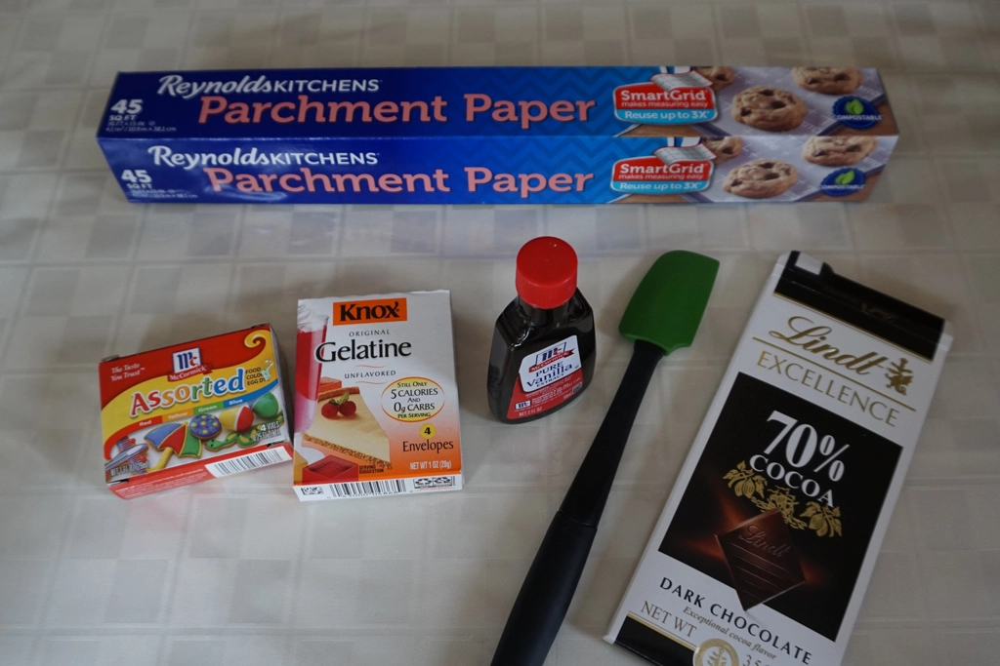
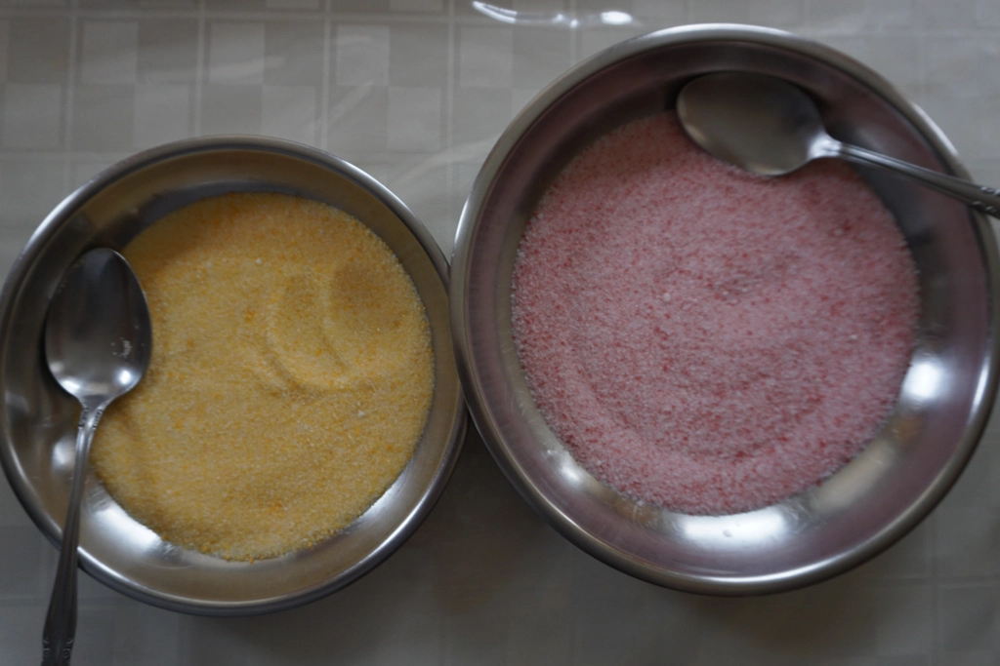
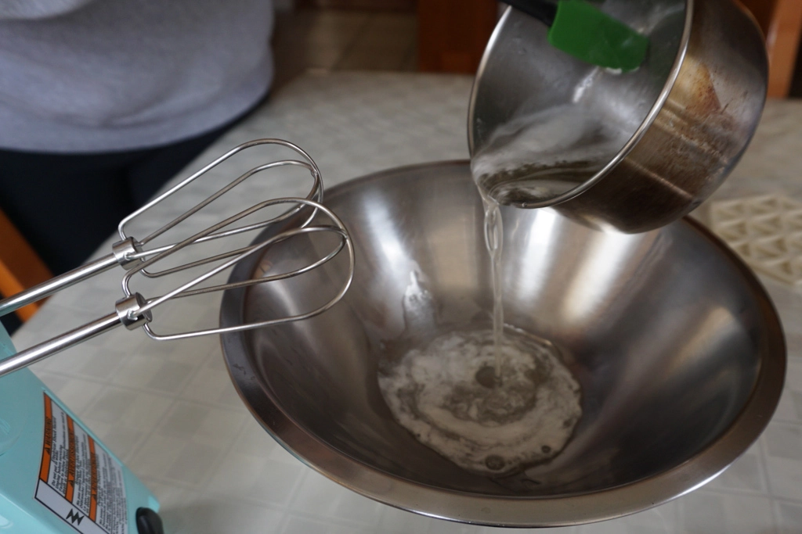
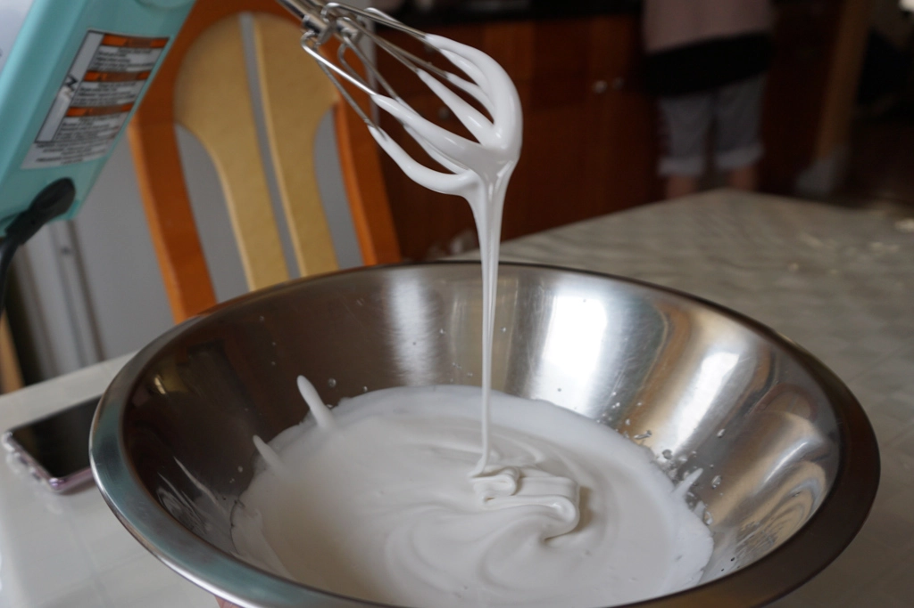
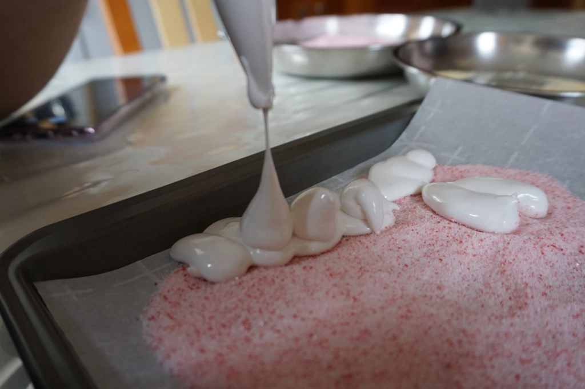
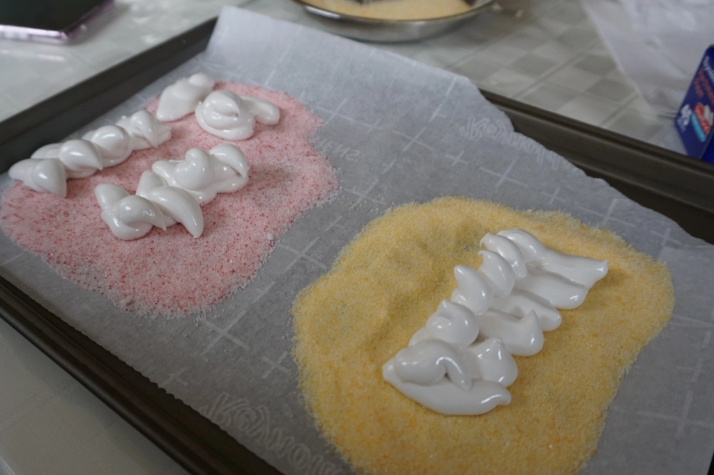
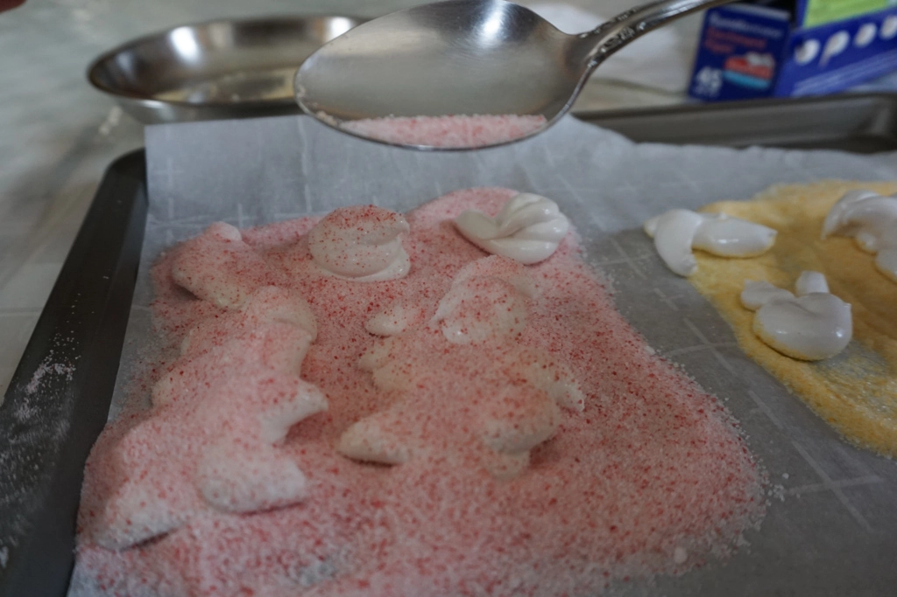
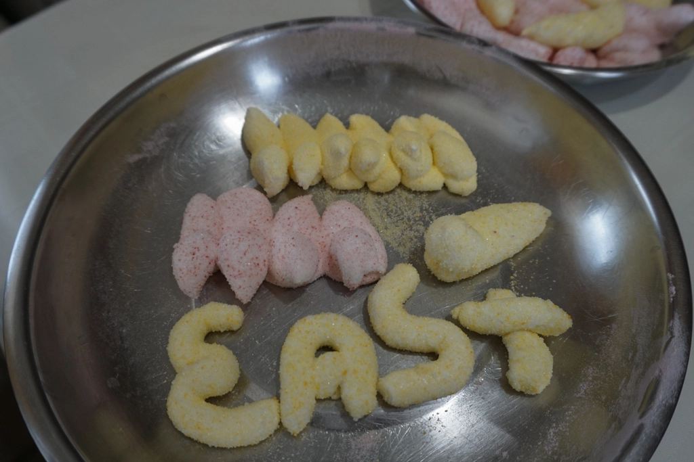

Homemade Peeps
Apr 4 - Written by Bonnie and Emily
Happy Easter! Hopefully you’re able to enjoy some good weather and have an eventful weekend celebrating!
Of course with the holiday we had to do something Easter themed, and what says Easter more than Easter eggs? Peeps, the classic Easter themed marshmallow shaped chicks covered in delicious colorful sugar!
Now what Peep related activity are we doing you ask? Of course with all the cooking and baking that we do, we had to attempt to make these marshmallow favorites ourselves. So, we took on the challenge of recreating them from scratch! We looked up some recipes online and watched some YouTube tutorials to get a better understanding of the Peep making process and it seemed like it was a relatively simple process. It turns out that making homemade marshmallows only required a few ingredients and steps so we figured this was going to be a breeze. But boy were we mistaken.
Before making the marshmallow batter, we had to make the colorful sugar that coats these squishy treats. To do so, all you need is some sugar and food coloring. We opted to mix the color into the sugar by hand rather than using a food processor which likely would have resulted in the coloring being more evenly distributed. But, regardless of the method and how evenly distributed your color is, we recommend spreading the colored sugar out on a pan or plate and placing it in a warm oven to dry out for about 10-15 minutes. Once your sugar is no longer moist and is dry to the touch, it's ready to be used!
Creating the marshmallow batter was a simple process as it only required a few steps which mainly consisted of a lot of mixing and simmering to get the perfect white colored batter. First, we soaked the gelatin powder in some water to use as a thickener later. In the meantime, we dissolved the water and sugar in a pot over low heat until all the sugar dissolved. Once that was done, we added in the gelatin and let the mixture simmer for around 15 minutes. Definitely make sure to keep an eye on your pot as our mixture definitely came close to overflowing a few times!
After simmering the gelatin and sugar mixture, we let our electric hand mixer do the rest of the work. Similar to beating egg whites, we took turns mixing our mixture until it reached a relatively thick consistency where you could create ribbons with the batter. Once the batter was completed we figured the rest would be relatively easy, but this was where the real challenge began. Since the tutorials mention that we have to make sure the batter has cooled enough for the marshmallows to hold it’s shape, we made sure to wait a few minutes before starting. To make sure that our peeps were fully covered in the colorful sugar that we had made and to prevent them from sticking to the parchment paper, we made a bed of sugar on our pan before piping. Little did we know that once we started piping we’d realize something wrong - our mixture was too soft.
We attempted to create some peeps with a little dove tail until we realized that no longer how long we waited for the marshmallow batter to cool, the marshmallow continued to sink. No matter what we did, it was still too soft to form the well structured chicks that we were aiming for.
 In the end, we were able to create a few peeps that looked relatively similar to a chick shape after allowing the batter to cool some more. Despite our best efforts, our peeps turned into abstract chick marshmallows - and then just abstract marshmallows which was one of the reasons we had abandoned giving our abstract chicks chocolate eyes. Nevertheless, if you prefer extremely soft, squishy, and deliciously sweet marshmallows, these would be right up your alley. As most of you all know, recipes always seem ten times easier than they are in practice.
